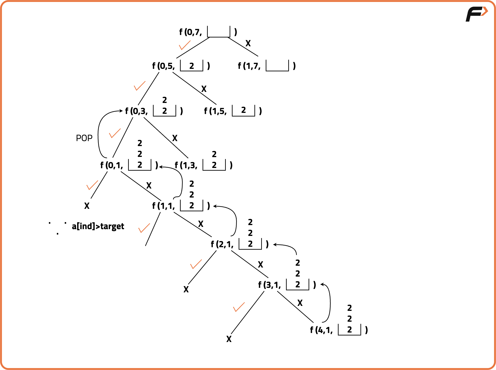
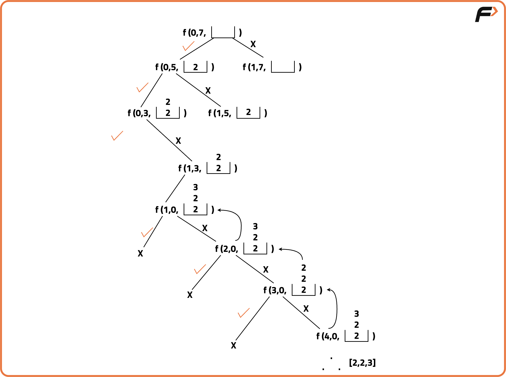

Combination Sum - 1
Problem Statement:
Given an array of distinct integers and a target, you have to return the list of all unique combinations where the chosen numbers sum to target. You may return the combinations in any order.
The same number may be chosen from the given array an unlimited number of times. Two combinations are unique if the frequency of at least one of the chosen numbers is different.
It is guaranteed that the number of unique combinations that sum up to target is less than 150 combinations for the given input.
Examples
Example 1:
Input: array = [2,3,6,7], target = 7
Output: [[2,2,3],[7]]
Explanation: 2 and 3 are candidates, and 2 + 2 + 3 = 7. Note that 2 can be used multiple times.
7 is a candidate, and 7 = 7.
These are the only two combinations.
Example 2:
Input: array = [2], target = 1
Output: []
Explaination: No combination is possible.
Disclaimer: Here is the practice link to help you assess your knowledge better. It's highly recommend trying to solve it before looking at the solution.
Approach
Algorithm
Intuition:
For questions like printing combinations or subsequences, the first thing that should strike your mind is recursion.
How to think recursively?
Whenever the problem is related to picking up elements from an array to form a combination, start thinking about the “pick and non-pick” approach.
We use a recursive backtracking approach to find all combinations that sum up to the target.
- We define a recursive function with the following parameters:
- Index — current position in the array.
- Target — remaining sum we need to achieve.
- DS (data structure) — to store the current combination.
- At every step, we have two choices:
- Pick the element at the current index:
- We reduce the target by
arr[index]. - Add
arr[index]to the DS. - We stay on the same index since we can reuse the same element.
- We reduce the target by
- Not pick the element:
- We move to the next index.
- Target remains unchanged.
- Element is not added to the DS.
- Pick the element at the current index:
- While backtracking, remove the last inserted element to explore new paths.
- This process is repeated while
index < array.size()for a given recursion call. - We can optionally stop recursion when
target == 0, but here we allow the recursion to run fully for generalization.


Code
#include<bits/stdc++.h>
using namespace std;
class Solution {
public:
// Function to find all combinations of numbers that sum up to the target
void findCombination(int ind, int target, vector<int>& arr, vector<vector<int>>& ans, vector<int>& ds) {
// Base case: if we have considered all elements in the array
if (ind == arr.size()) {
// If the target is zero, we have found a valid combination
if (target == 0) {
ans.push_back(ds); // Add the current combination to the result
}
return;
}
// Recursive case: pick the element if it's less than or equal to the target
if (arr[ind] <= target) {
ds.push_back(arr[ind]); // Add the current element to the combination
findCombination(ind, target - arr[ind], arr, ans, ds); // Continue with the same index to allow repeated elements
ds.pop_back(); // Backtrack by removing the last added element
}
// Skip the current element and move to the next index
findCombination(ind + 1, target, arr, ans, ds);
}
public:
// Main function to get all combinations
vector<vector<int>> combinationSum(vector<int>& candidates, int target) {
vector<vector<int>> ans; // To store the result
vector<int> ds; // To store a current combination
findCombination(0, target, candidates, ans, ds); // Start the recursive search
return ans; // Return all valid combinations
}
};
int main() {
Solution obj;
vector<int> v {2, 3, 6, 7}; // Candidate numbers
int target = 7; // Target sum
// Get all combinations
vector<vector<int>> ans = obj.combinationSum(v, target);
// Output the combinations
cout << "Combinations are: " << endl;
for (int i = 0; i < ans.size(); i++) {
for (int j = 0; j < ans[i].size(); j++) {
cout << ans[i][j] << " "; // Print each element of the combination
}
cout << endl; // Print a newline after each combination
}
return 0;
}
Complexity Analysis
Time Complexity: O(2t * k) due to exploring all combinations up to the target with copying each valid combination of average length k.
Space Complexity: O(k * x) to store all valid combinations, where x is the number of combinations and k is their average length.